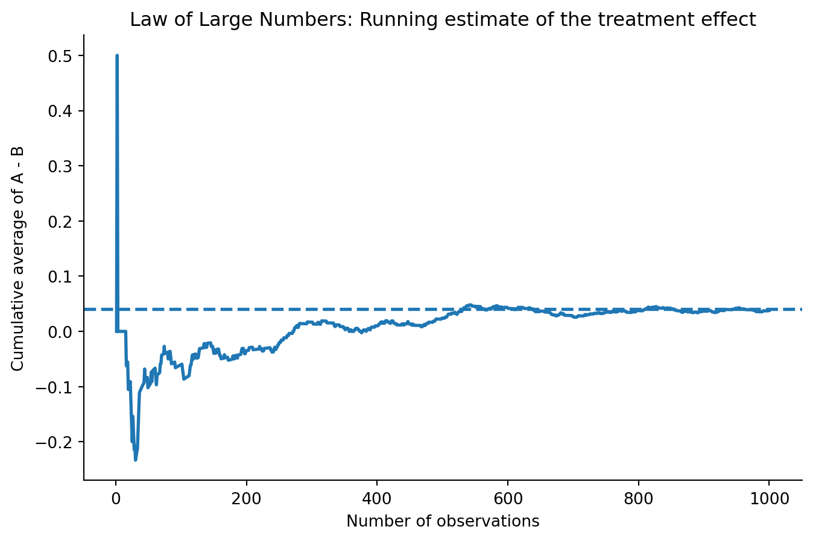
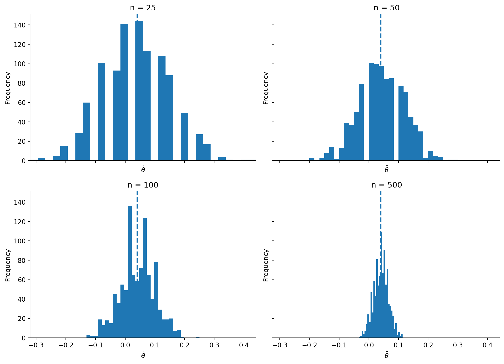

| Group | True sign-up rate | Sample sign-up rate | Sample size | |
|---|---|---|---|---|
| 0 | CTA A | 0.22 | 0.216 | 1000 |
| 1 | CTA B | 0.18 | 0.178 | 1000 |
A/B Testing a Call to Action
Simulating Key Ideas from Classical Frequentist Statistics
A simulation-based introduction to A/B testing and key ideas in classical frequentist statistics.
Introduction
Suppose I run a website with a landing page that invites visitors to subscribe to a newsletter. A small wording change in that invitation may affect whether people decide to sign up, so rather than relying on intuition, I want to test two alternative calls to action.
In this example, CTA A reads “Sign up for our newsletter here!” and CTA B reads “Stay up to date by signing up!”. To evaluate which version performs better, I run an A/B test. In an A/B test, visitors are randomly assigned to see one of the two versions, and then I compare the sign-up rates across the groups. Because assignment is random, any systematic difference in outcomes can be attributed to the CTA rather than to differences in the visitors themselves.
The A/B Test as a Statistical Problem
Each visitor either signs up or does not sign up, so each individual outcome can be modeled as a draw from a Bernoulli distribution with parameter \(\pi\), where \(\pi\) is the probability of signing up.
Because the language of the CTA may affect user behavior, I allow that probability to differ across the two groups. Visitors who see CTA A have sign-up probability \(\pi_A\), while visitors who see CTA B have sign-up probability \(\pi_B\). In both groups, each observation takes only two possible values: 1 if the visitor signs up and 0 if the visitor does not.
The quantity I care about is the difference in sign-up rates between the two versions:
\[ \theta = \pi_A - \pi_B \]
To estimate this quantity, I use the difference in sample means:
\[ \hat\theta = \bar{X}_A - \bar{X}_B \]
Because each observation is either 0 or 1, the sample mean is just the proportion of visitors who signed up. That means \(\bar{X}_A = \hat\pi_A\) and \(\bar{X}_B = \hat\pi_B\), so the estimator is simply the observed difference in sign-up rates.
Simulating Data
In a real A/B test, I would not know the true values of \(\pi_A\) and \(\pi_B\). For this exercise, however, it is useful to set those values ourselves so that we can study how the estimator behaves when we know the truth. This lets us compare what the simulation produces to the actual underlying treatment effect.
Here I assume that the true sign-up probability under CTA A is 0.22 and the true sign-up probability under CTA B is 0.18. That means the true treatment effect is:
\[ \theta = 0.22 - 0.18 = 0.04 \]
I now simulate 1,000 draws from each Bernoulli distribution.
The simulated sample proportions are not exactly equal to the true probabilities, but they should be reasonably close. That is exactly what we expect from random sampling.
The Law of Large Numbers
The Law of Large Numbers tells us that as the sample size grows, the sample mean converges to the population mean. In this setting, that idea is important because it helps justify why \(\hat\theta = \bar{X}_A - \bar{X}_B\) should be close to the true \(\theta\) once the sample is large enough.
To illustrate this, I compute the element-wise differences between the simulated CTA A and CTA B outcomes, then calculate the cumulative average of that difference vector.

At the beginning of the sample, the running average moves around quite a bit because each additional observation has a large impact on the estimate. As more observations are added, the line becomes much more stable and gradually settles near the true value of 0.04.
The main lesson from this plot is that larger samples reduce noise. The estimator is still random, but with enough observations it becomes much more reliable. This is the practical value of the Law of Large Numbers in an A/B testing context.
Bootstrap Standard Errors
Once I have an estimate of the treatment effect, the next question is how precise that estimate is. A point estimate alone does not tell us how much uncertainty remains, so it is useful to report a standard error and a confidence interval.
One way to estimate the standard error is by using the bootstrap. The bootstrap is a resampling method that avoids relying entirely on a closed-form formula. The basic idea is to repeatedly resample from the observed data, with replacement, and recalculate the statistic of interest each time. The standard deviation of those resampled statistics provides an estimate of the standard error.
I now generate 1,000 bootstrap resamples. In each resample, I draw 1,000 observations with replacement from group A and 1,000 observations with replacement from group B, compute the difference in means, and store the result.
| Quantity | Value | |
|---|---|---|
| 0 | Point estimate | 0.0380 |
| 1 | Bootstrap standard error | 0.0177 |
| 2 | Analytical standard error | 0.0178 |
| 3 | 95% CI lower bound | 0.0034 |
| 4 | 95% CI upper bound | 0.0726 |
The bootstrap standard error and the analytical standard error should be very close to one another. That is reassuring, because it suggests that both methods are capturing the same underlying uncertainty in the estimate.
Using the bootstrap standard error, the 95% confidence interval for \(\theta\) is the point estimate plus or minus 1.96 standard errors. Interpreted in plain language, this interval gives a plausible range for the true difference in sign-up rates between the two CTAs. If the interval excludes zero, that suggests evidence of a real difference between the two versions.
The Central Limit Theorem
The Central Limit Theorem says that regardless of the shape of the underlying population distribution, the sampling distribution of the sample mean becomes approximately Normal as the sample size grows. Since my estimator is the difference in two sample means, the same idea applies here as well.
To demonstrate this, I simulate the sampling distribution of \(\hat\theta\) for four different sample sizes: \(n \in \{25, 50, 100, 500\}\). For each sample size, I repeatedly draw observations from the two Bernoulli distributions, compute the difference in means, and repeat that process 1,000 times.

At smaller sample sizes, the histograms look rougher and less smooth. As the sample size increases, the distribution becomes more regular and more bell-shaped. This is the Central Limit Theorem in action.
The important takeaway is that with large enough samples, the sampling distribution of the difference in means can be approximated well by a Normal distribution. That approximation is what makes large-sample hypothesis testing possible.
Hypothesis Testing
Now that I have seen the Central Limit Theorem in action, I can use it to perform a formal hypothesis test. The purpose of a hypothesis test is to evaluate whether the observed difference in sign-up rates could reasonably have occurred if there were actually no difference between the two CTAs.
The null and alternative hypotheses are:
\[ H_0: \theta = 0 \]
\[ H_1: \theta \neq 0 \]
To test the null, I standardize the estimate using its standard error:
\[ z = \frac{\hat\theta - 0}{SE(\hat\theta)} \]
The logic behind this is straightforward. First, the CLT tells us that \(\hat\theta\) is approximately Normally distributed in large samples. Second, under the null hypothesis that distribution is centered at 0. Third, when a Normal random variable is divided by its standard deviation, the result follows a standard Normal distribution. That means under \(H_0\), the statistic \(z\) is approximately distributed as \(N(0,1)\), which gives us a reference distribution for computing a p-value.
This is sometimes called a t-test, but in this setting it is more accurate to think of it as a large-sample z-test. The classical exact t-test comes from Normally distributed data with an estimated variance. Here the data are Bernoulli rather than Normal, so there is no exact t-distribution result. Instead, we rely on the CLT and a Normal approximation. In large samples, the practical difference is very small, but the conceptual distinction is still worth understanding.
| Statistic | Value | |
|---|---|---|
| 0 | Estimate | 0.0380 |
| 1 | Standard error | 0.0178 |
| 2 | z-statistic | 2.1388 |
| 3 | p-value | 0.0325 |
A small p-value indicates that the observed difference would be unlikely under the null hypothesis of no treatment effect. In this simulation, because the true difference is 0.04, I would expect the test to often provide evidence against the null, although randomness still matters in any single sample.
The T-Test as a Regression
It turns out that this two-sample comparison is mathematically equivalent to a simple linear regression. That is useful because it shows that A/B testing can be analyzed using the same tools that are commonly used for regression, and those tools extend naturally to more complex settings.
To do this, I stack the two groups into a single dataset. Let \(Y_i\) be the outcome for visitor \(i\), equal to 1 if the visitor signs up and 0 otherwise. Let \(D_i\) be an indicator equal to 1 if the visitor saw CTA A and 0 if the visitor saw CTA B. I then estimate the regression:
\[ Y_i = \beta_0 + \beta_1 D_i + \varepsilon_i \]
In this model, \(\beta_0\) is the expected value of \(Y_i\) when \(D_i = 0\), which is the mean of group B. The quantity \(\beta_0 + \beta_1\) is the expected value of \(Y_i\) when \(D_i = 1\), which is the mean of group A. Therefore, \(\beta_1\) must be the difference in means, \(\pi_A - \pi_B = \theta\). That means the OLS estimate \(\hat\beta_1\) is numerically identical to \(\hat\theta\).
| Statistic | Value | |
|---|---|---|
| 0 | Coefficient on D | 0.0380 |
| 1 | Standard error | 0.0178 |
| 2 | t-statistic | 2.1377 |
| 3 | p-value | 0.0327 |
| Approach | Estimate | SE | Test statistic | p-value | |
|---|---|---|---|---|---|
| 0 | Two-sample test | 0.038 | 0.0178 | 2.1388 | 0.0325 |
| 1 | Regression | 0.038 | 0.0178 | 2.1377 | 0.0327 |
The coefficient estimate from the regression matches the difference-in-means estimate from the earlier section. The standard errors may differ slightly because the regression output uses the standard OLS variance formula, while the earlier analytical formula was tailored specifically to Bernoulli samples.
This equivalence matters because the regression framework makes it easy to add controls, interaction terms, or multiple treatments. In the simple two-group case, it gives the same basic answer, but it also opens the door to more flexible experimental analysis.
The Problem with Peeking
Now suppose a manager is impatient and does not want to wait until the full sample has been collected. Instead, she checks the hypothesis test after every 100 visitors per group and stops the experiment early if any one of those tests is significant at the 5% level.
This is a problem under classical frequentist inference. A single test at \(\alpha = 0.05\) has a 5% chance of producing a false positive when the null is true. But when I repeatedly test the data as it accumulates, each peek creates another opportunity to reject the null by chance alone. The overall probability of at least one false rejection becomes much larger than 5%.
To show this, I simulate a world in which the null hypothesis is true, so that \(\pi_A = \pi_B = 0.20\). In each simulated experiment, I generate 1,000 observations for each group and compute a p-value after every 100 observations per group. If any one of those p-values is below 0.05, I count that experiment as a false positive. I then repeat the entire process 10,000 times.
| Scenario | Rate | |
|---|---|---|
| 0 | Nominal false positive rate from one test | 0.0500 |
| 1 | Empirical false positive rate with peeking | 0.1987 |
The simulated false positive rate under peeking is usually much higher than 0.05. That means repeated checking makes it much easier to incorrectly declare a winner even when the two CTAs are actually identical.
In practice, this matters because A/B tests are often monitored in real time. If the stopping rule is not planned in advance, ordinary p-values can become misleading. Classical frequentist inference assumes a fixed analysis plan, and peeking violates that assumption.
Conclusion
This A/B testing example illustrates several core ideas in classical frequentist statistics. The Law of Large Numbers shows why sample averages become more reliable as the sample grows. The bootstrap provides a practical way to measure uncertainty. The Central Limit Theorem explains why Normal approximations become useful for inference. Hypothesis testing gives a formal framework for evaluating evidence, and the regression formulation shows that the same logic can be expressed in a broader modeling language.
Just as importantly, the peeking example shows that sound inference depends not only on formulas but also on disciplined experimental practice. A/B testing is powerful, but only when it is paired with careful statistical reasoning.